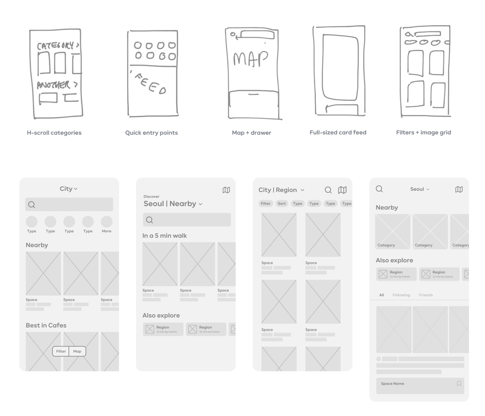
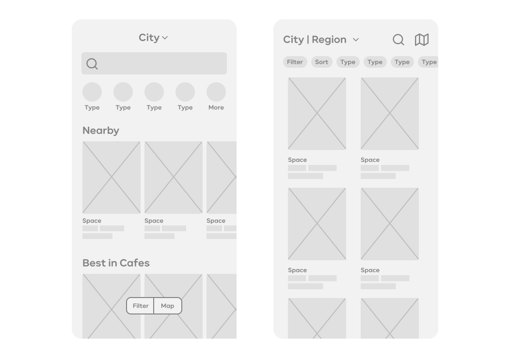
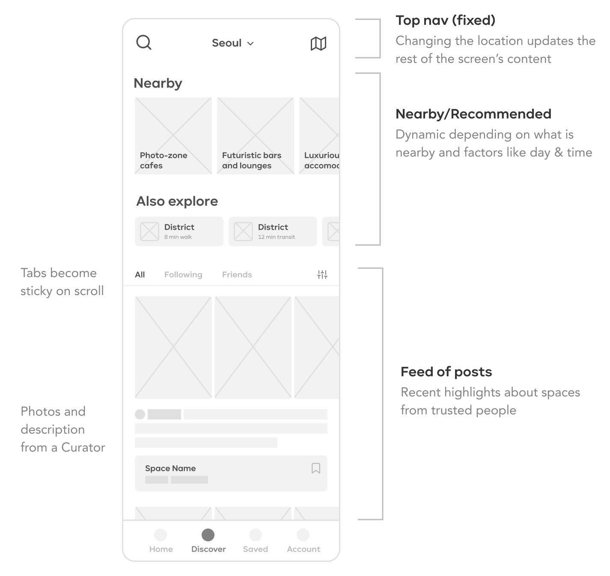
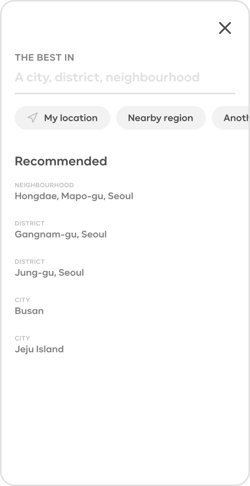
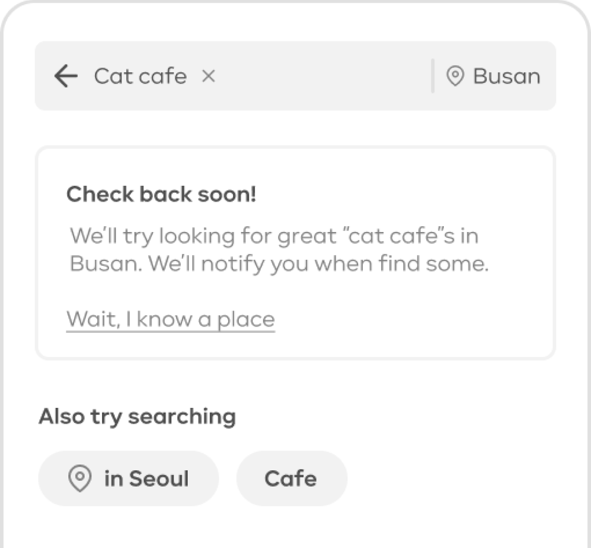
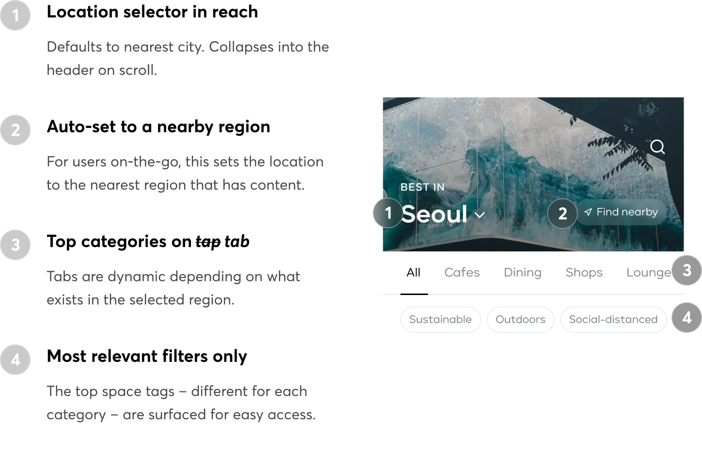
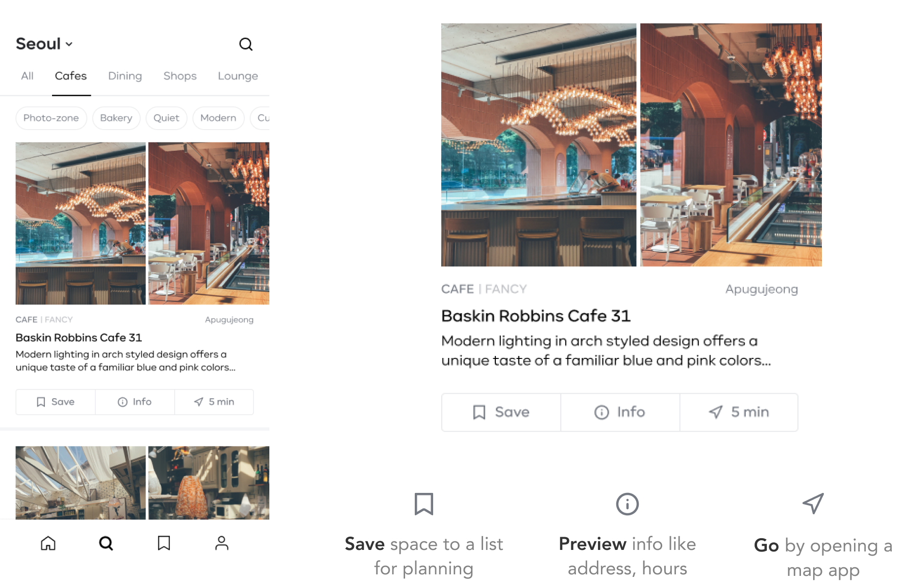

Daytrip is a content platform where top travel and lifestyle influencers curate the highest quality
spaces in South Korea. I designed and launched the iOS app as their
founding designer.
The following is a peek into my process for a redesign leading into V2 of the app.
Timeframe
Dec 2020 - Jan 2021, Part-time
Role
Interaction design, Visual design
Tools
Figma, Principle
The Problem
For people using Daytrip to find interesting places to go to in Seoul, the Search tab is a disappointing experience due to unreliable filters and lack of context awareness.
Why solve it?
Improve retention
The redesign of the Search tab is part of larger efforts to improve first week retention. After analyzing the entire user journey, I thought retention could be addressed most impactfully by addressing other stages of the experience – except the story told by the usage data was too urgent to ignore.
We saw that after onboarding, most people make a beeline for the Search tab. Unfortunately after interacting with the filters and the search bar, many run into disappointing results and never come back. They've lost trust in Daytrip!
Existing pain-points
Hit em' with a wall of filters...
Each space has metadata or "tags" about the type (e.g. cafe, library), feel (e.g. luxurious, cozy), and location. The old Search tab simply surfaced all the tags for people to build filter queries with. But this design didn't account for what would be most important for people searching in different contexts. As a result, people had to fiddle with the filters or type in queries into a mysterious search bar – both cognitively demanding tasks. Complaints about the difficulty even showed up in an app review.
Insights
Location, location, location
The design of the rest of the product targets two main personas but. From previous interviews, we knew that people used Daytrip for 3 general jobs:
Finding somewhere to go to immediately #on-the-go
Discovering hidden gems in a neighborhood #browsing
Planning a weekend trip (e.g. to Busan, another major city in South Korea) #planning
For V1, we designed the "Search" tab primarily for the first scenario (and the "Home" tab for all other planning/browsing). But after looking at the usage data and seeing how often – and how immediate – people filtered/searched by region, I decided the design of the tab should accomodate
Design goals
Curated like a magazine, not a directory
Emphasize location context– Make it easy to find content that is specific to regions that are nearby and/or trendy.
Set expectations – Highlight that content is intentionally limited to only the best; does not list everything like Naver (Korean equivalent of Google).
Redirect disappointment – Discourage queries that drop users on the unhappy path (i.e. no relevant results) and allay disappointment if they do.
Towards a solution
HMW tailor Daytrip's discovery experience to people's context?
Ideating with the team started out more "blue sky", especially since we wanted to explore new business opportunities in the redesign. I began by involving all 4 members of the team by borrowing a few pages from the GV design sprint. After gathering interaction patterns from apps our users were likely familiar with, we discussed which ones were
most desirable from the product and engineering perspective.

We decided to explore select combos of different patterns, and I quickly created low-fi wireframes for discussion...

This was around when we decided to make the search and map functions secondary.
The following is an "ideal" approach that accounted for future product developments, but given time constraints, we ultimately did not move forwards with it for the first release of the redesign.

The core of this approach was leveraging context and personalization using a dynamic, card-based design + the feed of recent posts from curators to emphasize the "social recommendation" strength of the product.
To focus on problem-solving, I was also wireframing for the secondary screens. This allowed me to save time and develop more explorations before bringing them to discussion:
Improved location selection
The data showed that a small handful of regions made up the majority of searches and filters that included a region, so it would be helpful if these regions were featured for easy access.

Redirecting disappointment
When people use the search bar, their queries are tend to be quite specific – and ocassionally not very suitable for Daytrip's database and search functionaliy. A common occurence was seeing people repeatedly make search attempts (up to 3 times), even modifying their query to try again when they couldn't find what they were looking for.

Whenever possible, the app can make suggestions for other queries to try. Additionally, sending notifications in the future when the content exists (and encouraging space suggestions) is chance to re-engage people who would have not come back otherwise.
First release
De-risk and ship
Due to a time-crunch to line up with the easing of restrictions in Seoul, the following is the
version we briefly tested with 3 current users and shipped. It was the safest option when
considering how people may have imprinted to the original filter-selection mechanism.
First-week retention after this release jumped up 20% to an all-time high. This is probably due to easing of
lockdown restrictions in Seoul! Many issues were still not resolved, and an unsatisfied app store review still noted
frustration.
Polishing
Towards the second release
Informed by data on the most common filter/search queries, I designed and prototyped a feasible approach for the second release of the Search tab upgrade. This design makes a major trade-off in removing the ability for users to build precise queries with tags upfront. Instead, all interactions available on the primary screen ensures people can find a relevant space in the right place – and the probability of landing on disappointing results is minimized.

Card design upgrade
The decision to surface the three action buttons came from thinking about the "jobs" people need Daytrip to do both when planning and when out-and-about (a job specific to the Search tab):

I originally prioritized the "Go" navigation button by making it the largest, but I ended up making them all equally sized to reduce the work that dev needs to do for setting iOS screen constraints. For now, the ordering of the actions is quite arbitrary. I'd like to find justification for it using some feedback from release.
A nice-to-have animation to make the meaning of the navigation minutes (the shortest time by either walking or Seoul's public transit) more clear:
What's next?
Measuring success
Development for the polished design is now underway. On release, I'll keep an eye on the average # of spaces new users save during their first session. Saving at least 5 spaces is linked to the "aha moment" when people discover new spaces they didn't know existed – and feel inspired to go visit them.